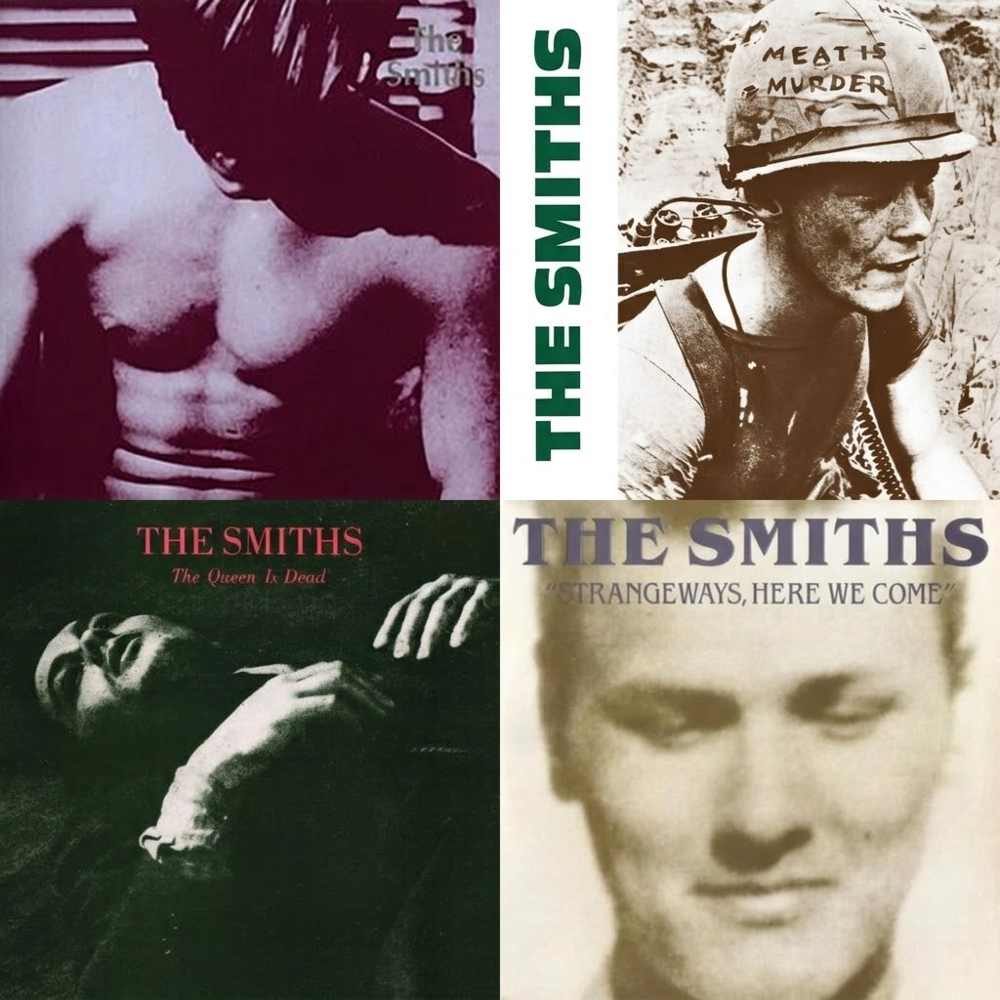
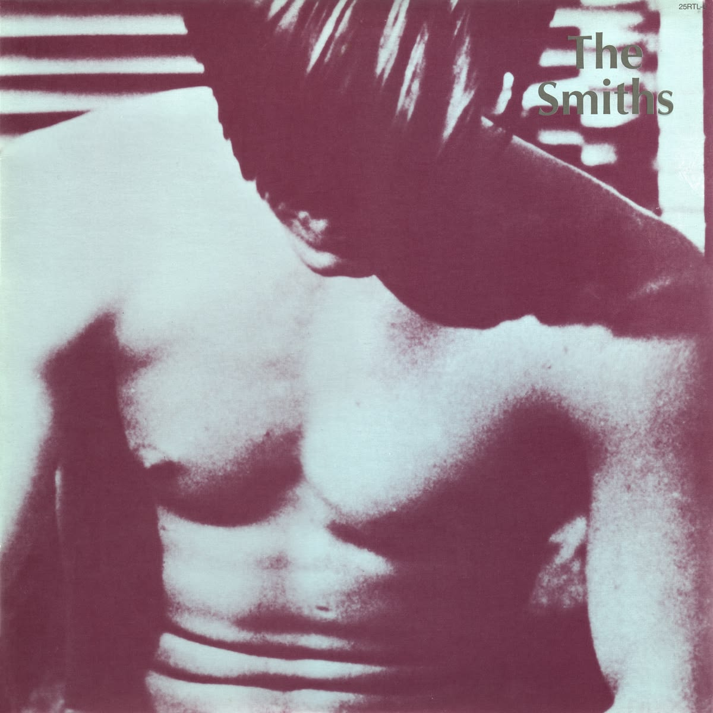
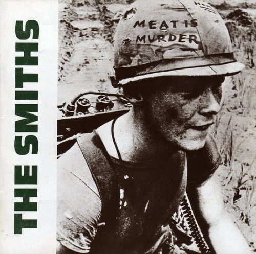
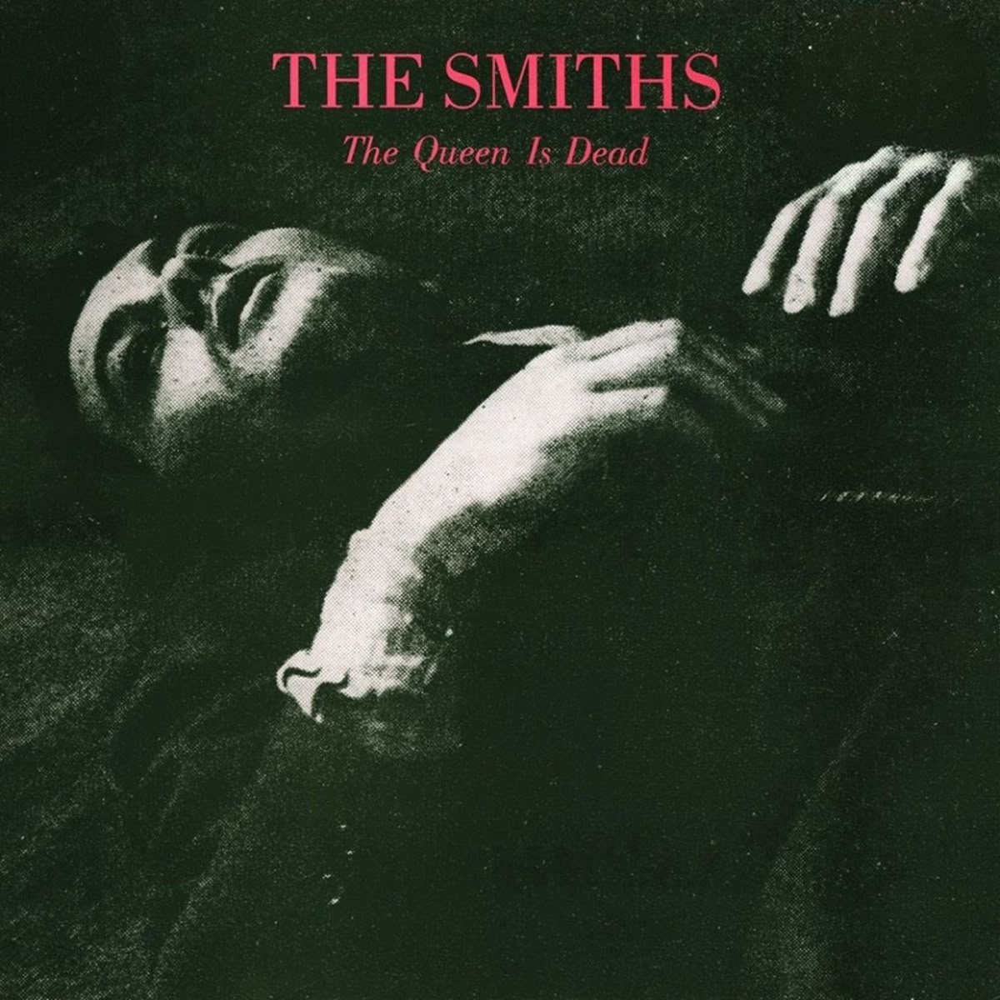

Em 1982, enquanto o synth-pop dominava a cena musical britânica, quatro jovens de Manchester decidiram seguir outro caminho. Com a voz marcante de Morrissey, as guitarras inovadoras de Johnny Marr, o baixo melódico de Andy Rourke e a bateria de Mike Joyce, nascia o The Smiths. Misturando pós-punk e jangle pop, a banda conquistou seu espaço com uma sonoridade autêntica e letras que exploravam a solidão, o amor não correspondido e a sensação de não pertencer a lugar algum. Com uma combinação de melancolia e humor ácido, suas músicas fizeram com que muitos ouvintes se sentissem compreendidos.
Entre 1984 e 1987, os Smiths lançaram quatro álbuns de estúdio que marcaram o rock alternativo britânico. Suas composições transitavam entre conflitos pessoais, críticas sociais e reflexões sobre a vida, conquistando uma legião de fãs e consolidando a identidade única da banda. Apesar do sucesso, tensões internas, especialmente entre Morrissey e Johnny Marr, levaram à separação do grupo em 1987, pouco antes do lançamento de Strangeways, Here We Come, seu último álbum de estúdio.

Mesmo com uma carreira breve, os Smiths influenciaram gerações de artistas e ajudaram a moldar o rock alternativo britânico. Décadas depois, suas canções continuam conquistando novos ouvintes, provando que sentimentos como solidão, insegurança e desejo de pertencimento são atemporais. Talvez seja por isso que os Smiths continuam tão presentes: suas músicas fazem com que pessoas que se sentem deslocadas encontrem, em meio às guitarras e às palavras, a sensação de não estarem sozinhas.
O álbum de estreia dos The Smiths é um convite para quem já se sentiu deslocado em um mundo que parece não ter sido feito para si. Com guitarras marcantes, melodias que oscilam entre a leveza e a melancolia e a voz inconfundível de Morrissey, o disco transforma sentimentos de inadequação, solidão e desejo em algo surpreendentemente cativante. Suas letras exploram relacionamentos complicados, inseguranças, conflitos familiares, sexualidade e a sensação de não pertencer. Existe um contraste fascinante entre a instrumentação frequentemente animada de Johnny Marr e as histórias carregadas de desconforto, ironia e vulnerabilidade. É um disco que consegue fazer você dançar enquanto pensa em todas as coisas que preferia não sentir.

Em Meat Is Murder, os The Smiths deixam a introspecção individual dividir espaço com críticas mais amplas à sociedade. O segundo álbum da banda apresenta uma sonoridade mais intensa e, em alguns momentos, sombria, acompanhando letras que questionam a violência, a crueldade, o autoritarismo e as estruturas sociais que muitas vezes são aceitas sem questionamento. A sensibilidade de Morrissey aparece aqui de maneira mais confrontadora. Em vez de apenas narrar sentimentos pessoais, ele provoca o ouvinte a olhar para realidades desconfortáveis. Ao mesmo tempo, canções sobre amor, insegurança e relações humanas mantêm o disco conectado ao universo emocional característico da banda. É um trabalho que mistura indignação e vulnerabilidade, sem perder o senso de humor irônico que torna suas composições tão particulares.

Considerado por muitos fãs e críticos um dos grandes trabalhos dos The Smiths, The Queen Is Dead reúne boa parte daquilo que tornou a banda tão especial: guitarras brilhantes, letras inteligentes, humor mordaz e uma capacidade quase desconcertante de transformar frustrações pessoais em canções memoráveis. O álbum percorre temas como alienação, desejo, desilusão romântica, identidade, insatisfação com a sociedade britânica e rejeição das convenções. Morrissey alterna entre a figura do observador sarcástico e a de alguém profundamente vulnerável, enquanto Johnny Marr constrói arranjos que tornam até os sentimentos mais amargos irresistivelmente melódicos. O resultado é um disco que pode soar rebelde, engraçado, triste e libertador ao mesmo tempo. Há também uma sensação de inconformidade que atravessa o trabalho inteiro: a vontade de viver de outra maneira, de escapar das expectativas alheias e de encontrar beleza justamente naquilo que o mundo considera estranho.

Lançado no ano em que a banda chegou ao fim, Strangeways, Here We Come tem uma atmosfera particular: é um álbum que soa como uma despedida sem precisar ser interpretado exclusivamente dessa forma. Os arranjos exploram novas texturas, as guitarras assumem nuances diferentes e as composições revelam uma banda disposta a experimentar sem abandonar sua identidade. As letras passam por desilusões amorosas, isolamento, ressentimento, desejo, arrependimento e a busca por algum tipo de liberdade. Existe uma sensação de cansaço em algumas canções, mas também uma energia provocadora e até teatral. A melancolia não aparece apenas como tristeza; ela se transforma em sarcasmo, fantasia e, às vezes, numa vontade quase desesperada de escapar da própria realidade. É um disco que recompensa a escuta atenta. Quanto mais você presta atenção às letras, aos arranjos e às mudanças de atmosfera, mais percebe as diferentes camadas que convivem dentro dele.